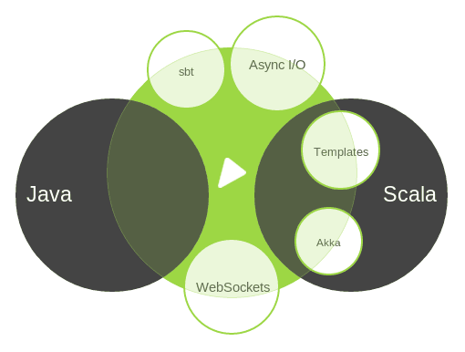
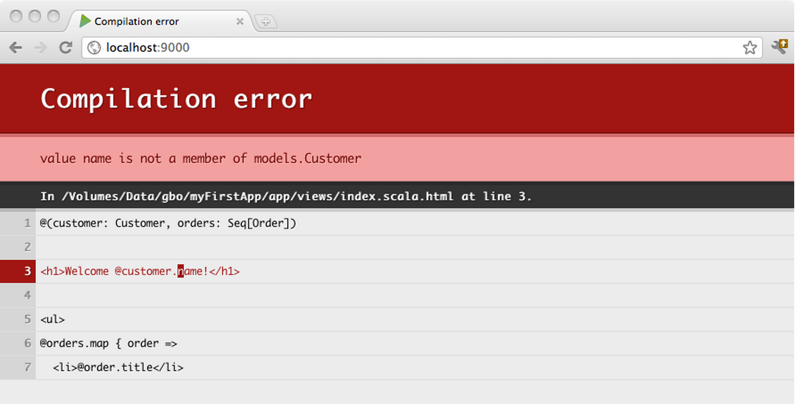

Scala & Play
Scala sits between OOP and FP
Scala is not going to be a better Java, nor a better Haskell on JVM.
Scala Compiler Overview
- scalac
- compiler options:
- -deprecation
- -unchecked
- fsc (compilation daemon)
Scala Build Tool
- sbt is a build tool for Scala and Java projects that aims to do the basics well.
- It requires Java 1.6 or later.
- sbt is very powerful, but very steep learning curve
Play Framework

The High Velocity Web Framework
for Java and Scala
Async I/O
Play uses a fully asynchronous model
built on top of Akka.
built on top of Akka.
Threaded Server

Most people are used to threaded servers.
Threaded Server (cont.)
void doGet(HttpServletRequest req, HttpServletResponse res) {
// Apache HttpClient
HttpClient client = new HttpClient();
GetMethod method = new GetMethod("www.foobar.com");
// blocking until return from synchronous call
int status = client.executeMethod(method);
LOG.log("Response status code is {}", status);
}
Threaded servers assign one thread per request
and use blocking I/O.
and use blocking I/O.
Evented Servers
Evented servers are gaining more popularity.
Evented Server (cont.)
public Result index(String url) {
F.Promise responsePromise = WS.url(url).get();
// thanks to the non-blocking IO, thread won't be idle here
return async(responsePromise.map(
new F.Function<ws.response, Result>() {
@Override
public Result apply(WS.Response response)
throws Throwable {
return ok(response.getBody()).as("text/html");
}
}
));
}
Evented servers have one thread/process
per CPU core
and use non-blocking I/O.
per CPU core
and use non-blocking I/O.
Scala API in Play
// make two parallel async calls
val fooFuture = WS.url(url1).get()
val barFuture = WS.url(url2).get()
for {
foo <- fooFuture
bar <- barFuture
} yield {
Ok(/*...*/)
}
Scala API is more concise and expressive,
especially for asnyc code block.
especially for asnyc code block.
Play Projects
app → Application sources └ assets → Compiled asset sources └ stylesheets → Typically LESS CSS sources └ javascripts → Typically CoffeeScript sources └ controllers → Application controllers └ models → Application business layer └ views → Templates conf → Configurations files └ application.conf → Main configuration file └ routes → Routes definition public → Public assets └ stylesheets → CSS files └ javascripts → Javascript files └ images → Image files project → sbt configuration files └ build.properties → Marker for sbt project └ Build.scala → Application build script └ plugins.sbt → sbt plugins lib → Unmanaged libraries dependencies test → source folder for unit or functional tests
Action and Controller
Action { request =>
Ok("Got request [" + request + "]")
}
Action is basically a function that handles a request
and generates a result to be sent to the client.
and generates a result to be sent to the client.
(play.api.mvc.Request => play.api.mvc.Result)Action and Controller (cont.)
package controllers
import play.api.mvc._
object Application extends Controller {
def index = Action {
Ok("It works!")
}
}
Controller is a singleton object
that generates action values.
that generates action values.
HTTP Router
# Extract the page parameter from the path
GET /:page controllers.Application.show(page)
Routes file syntax is really simple,
it maps HTTP method and path (pattern)
to a controller action.
it maps HTTP method and path (pattern)
to a controller action.
HTTP Router (cont.)
- It supports static path
GET /clients/all controllers.Clients.list() - as well as dynamic path
GET /clients/:id controllers.Clients.show(id: Long) - or, define regex for the dynamic part
GET /clients/$id<[0-9]+> controllers.Clients.show(id: Long)
HTTP Router (cont.)
- It takes parameters with fixed value,
# Fix the path to '/' if the requested path is home GET / controllers.Application.show(page = "home") - as well as default value
# Pagination links, like /clients?page=3 GET /clients controllers.Clients.list(page: Int ?= 1) - or optional values
# The version parameter is optional. E.g. /api/list-all?version=3.0 GET /api/list-all controllers.Api.list(Option[version])
HTTP Router (cont.)
Route file will be compiled into class.
// Redirect to /hello/Bob
def helloBob = Action {
Redirect(routes.Application.hello("Bob"))
}View Templates
Play 2.0 comes with a Scala-based template engine.
@(customer: Customer, orders: List[Order])
<h1>Welcome @customer.name!</h1>
<ul>
@for(order <- orders) {
<li>@order.getTitle()</li>
}
</ul> - View files are named like '*.scala.html'
- '@' is a magic character in the view files.
View Templates (cont.)
Templates are compiled,
so you will see any errors in browser
so you will see any errors in browser
